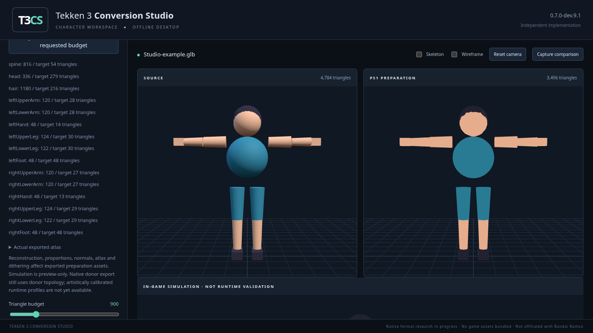
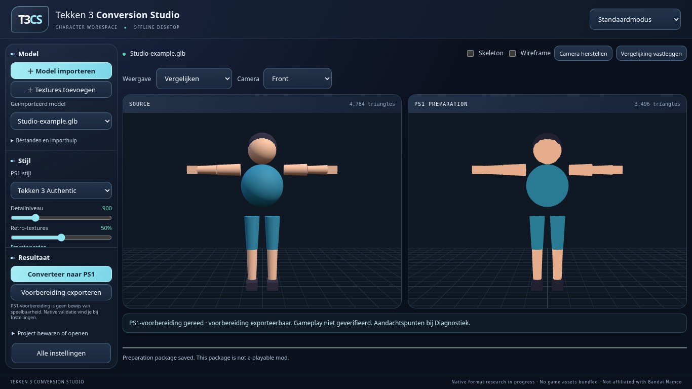
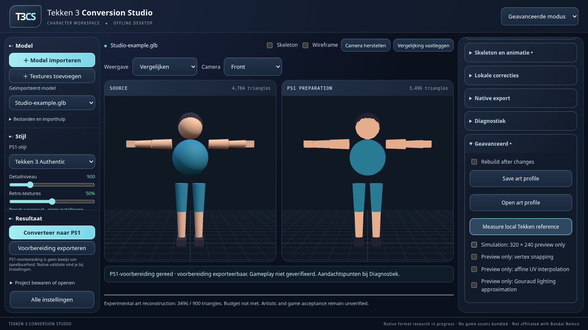
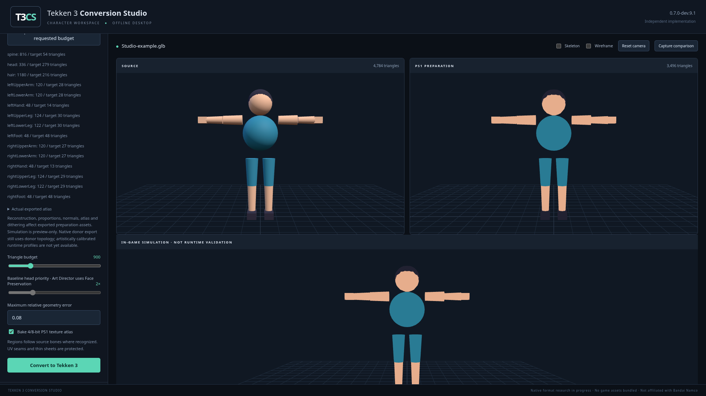
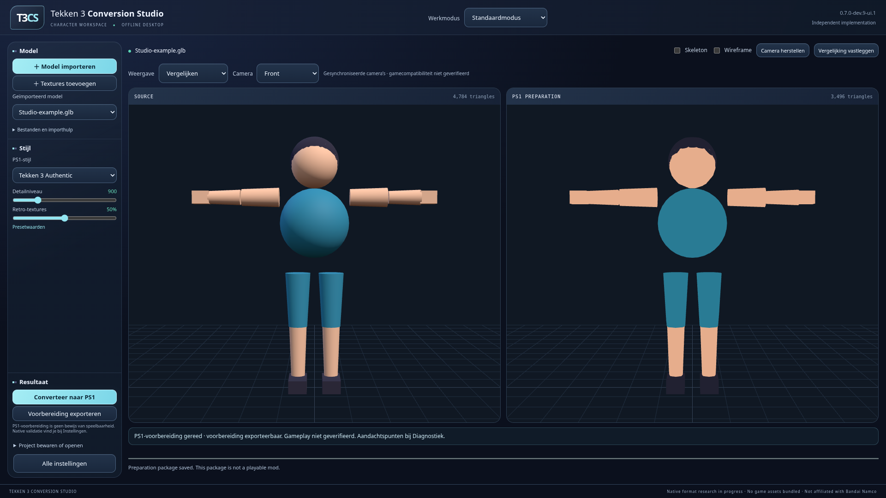
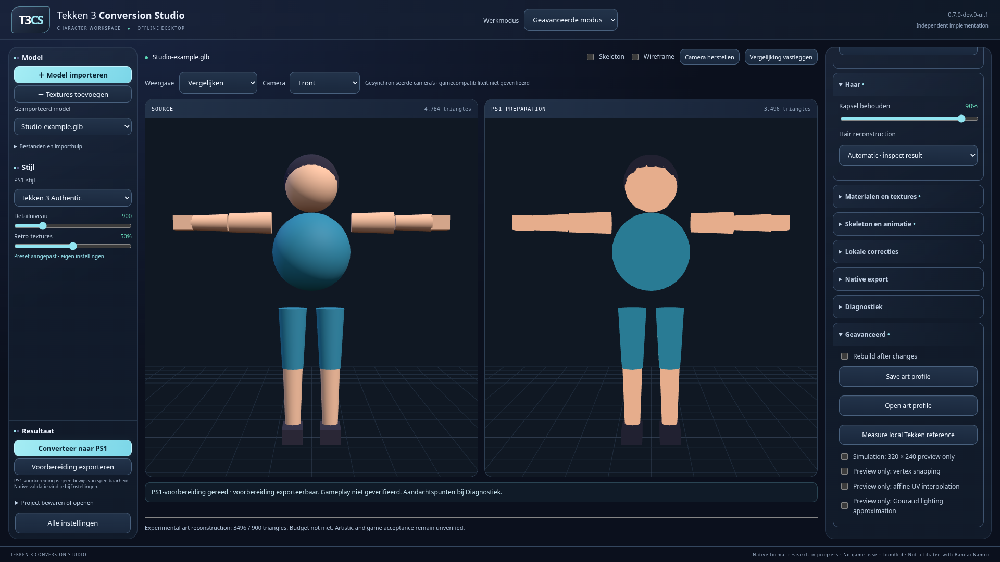
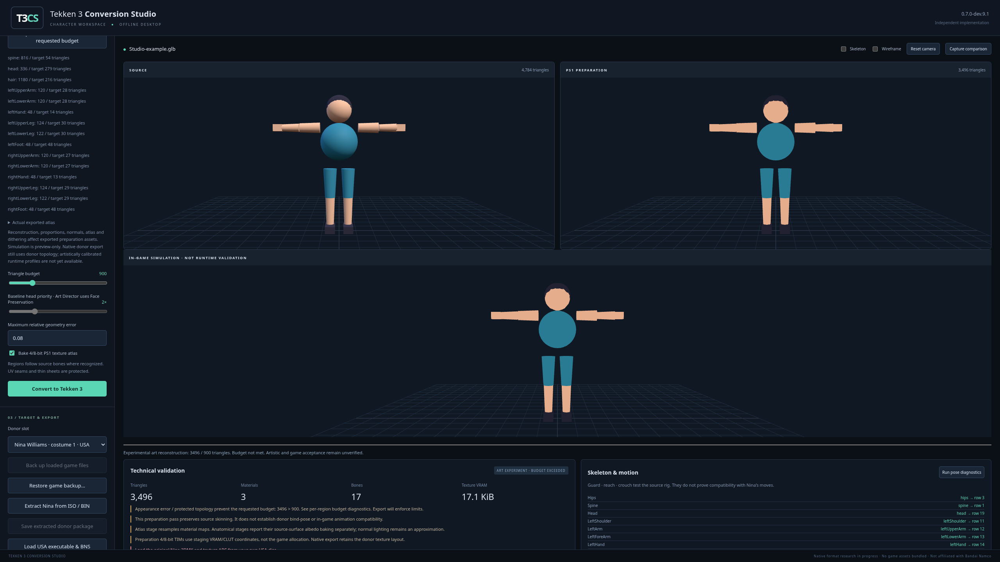
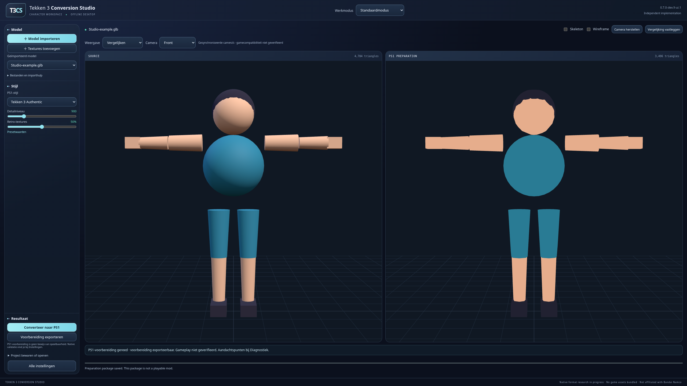
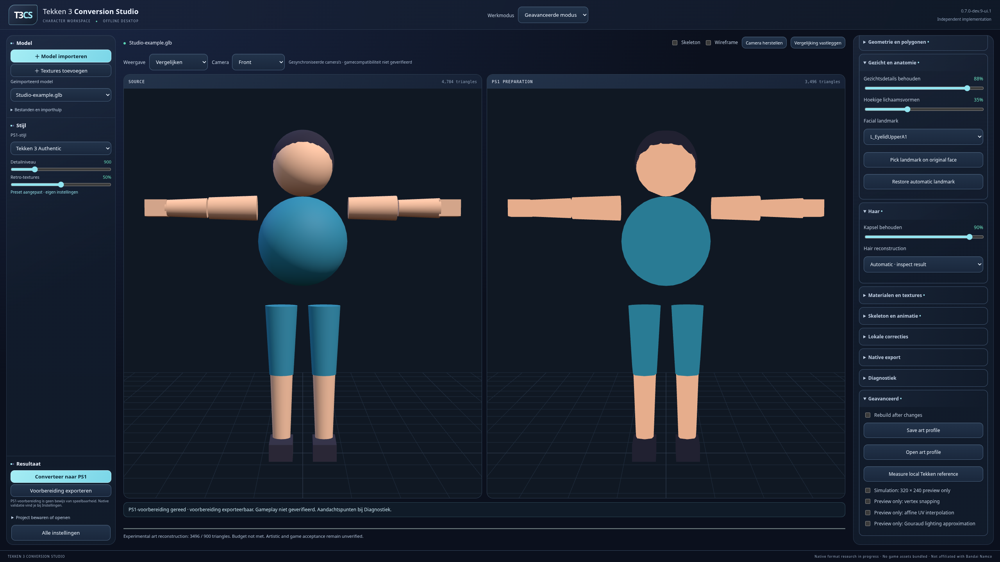

Afzonderlijke presentatievariant vanaf dev.9.1. Geen gewijzigde conversiealgoritmen, presets of projectformaten. Alle 80 oorspronkelijke ID-dragende bedieningselementen blijven aanwezig.
De beelden gebruiken hetzelfde eigen synthetische personage, broncamera en licht. Dit is een UI-beoordeling, geen bewijs van verbeterde karakterreconstructie. De cloudvergelijkingen gebruiken dezelfde Chromium/software-GPU; afzonderlijke Windows-beelden kunnen andere fonts/GPU-antialiasing tonen. Geen privé-Nikki-modellen, brontextures, projecten of gamebestanden opgenomen. Game-preview is geen geverifieerde gameplay.
| Voorheen — dev.9.1 | Standaardmodus | Geavanceerde modus |
|---|---|---|
 |  |  |
| Voorheen — dev.9.1 | Standaardmodus | Geavanceerde modus |
|---|---|---|
 |  |  |
| Voorheen — dev.9.1 | Standaardmodus | Geavanceerde modus |
|---|---|---|
 |  |  |
Windows-publicatie nog niet gevalideerd. De releaseworkflow moet eerst slagen.
Links blijven import, modelkeuze, stijl, detailniveau, retro-textures, conversie en export bereikbaar. Het rechterpaneel groepeert geometrie, gezicht, haar, materialen, skeleton, lokale correcties, native export en diagnostiek. Alleen presentatievoorkeuren worden lokaal onthouden; de bestaande projectopslag bewaart modelinstellingen. Aangepaste presets en categorieën zijn gemarkeerd. Verminderde beweging wordt gerespecteerd. Technische labels in het geavanceerde paneel blijven deels Engelstalig.
Menselijke ontwerp- en artistieke goedkeuring blijft open. De bestaande anatomische beperkingen en ontbrekende Nina/Expanded-gameplayvalidatie zijn niet door dit redesign opgelost.